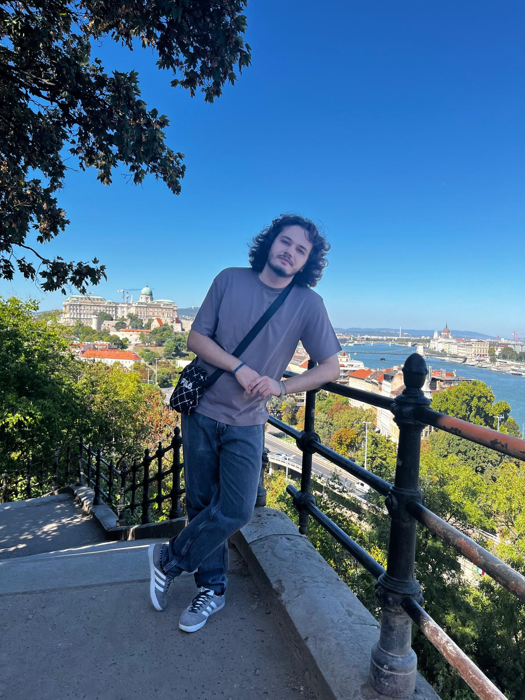
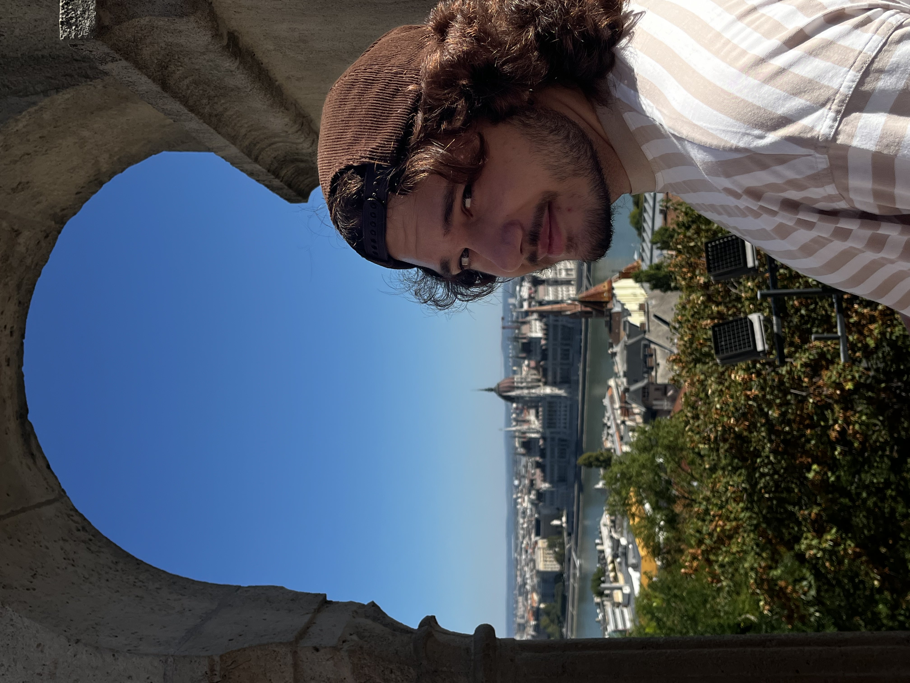

About


Currently studying Computer Engineering at Transilvania University of Brașov, I find that my academic interests and musical passions are deeply interlinked. I first discovered my love for engineering when I realized that the gear I use as a musician is built on either digital signal processing (DSP) algorithms or pure analog circuitry. My musical taste is diverse, spanning from Reggae, Funk, Metal, Krautrock, Dance-Punk, Jazz, Hip-Hop, Soul, Acid Rock and many more. I am an active member of a band mainly performing blues, alternative rock, and doom metal. Outside of my studies and music, I am an avid skier and gamer.
Find me here:
Education
High School
I finished my high school education at Alexandru Marghiloman High School in Buzău after 4 years.
University
I am currently a student at Transilvania University of Brașov, Faculty of Computer Engineering and Computer Science.
I am in year 2 of study.
My favourite courses so far are Programming, Data Structures and Algorithms, Signals and Systems, Analog Electronics, Digital Electronics.
The first course that really caught my attention was Programming since I've shown an interest in it since highschool.
Data il bat aru pe danciu and Algorithms is a course that I find very interesting because it helps me understand how to solve problems efficiently and digs deeper into what I learned in the programming course.
Experience
Intership Program at Pentalog-Globant
Finished an intership program at Pentalog-Globant. Throughout this internship I studied at the Pentalog headquarters Scrum Frameworks and Agile Methodologies. Along with the other interns in my team and with the help of our supervisor we managed to learn how to use these theoretical concepts in real life situations.
Extra Courses & Certifications
- Digital Competencies in Cybersecurity and Artificial Intelligence - Completed a specialized course in Cybersecurity and AI at Transilvania University of Brașov, supported by EU structural funds.
Projects
Personal Portfolio Website
Developed a personal portfolio using HTML5, CSS3, and JavaScript.
Retro Pokemon Style Video Game
Created a demo for a retro-style Pokemon game with Java, using Object-Oriented Programming principles. I am working along with a teammate that handles the graphics so I can focus on the gameplay mechanics.
Analog Fuzz Pedal Circuit for Electric Guitars
Designed a pedal circuit using a Schmitt trigger in LTSpice. I am currently working on improving its design by amplifying my original signal before it's clipping stage. I am also starting the process of building and testing the original circuit on a breadboard.
Arduino LED Project
Developed an Arduino-based project to control LED lights using UART and a simple circuit during the Communication Protocols lab.
Arduino Car Project
Built a remote-controlled car using an Arduino board and a ultrasonic sensor with two of my University classmates.